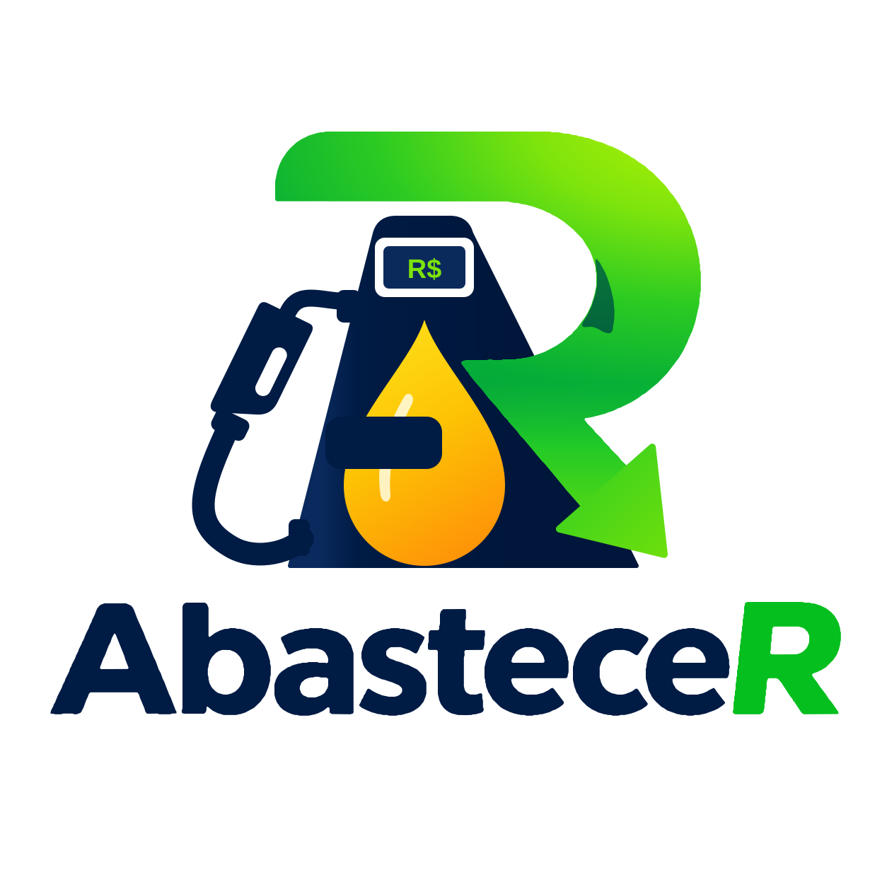
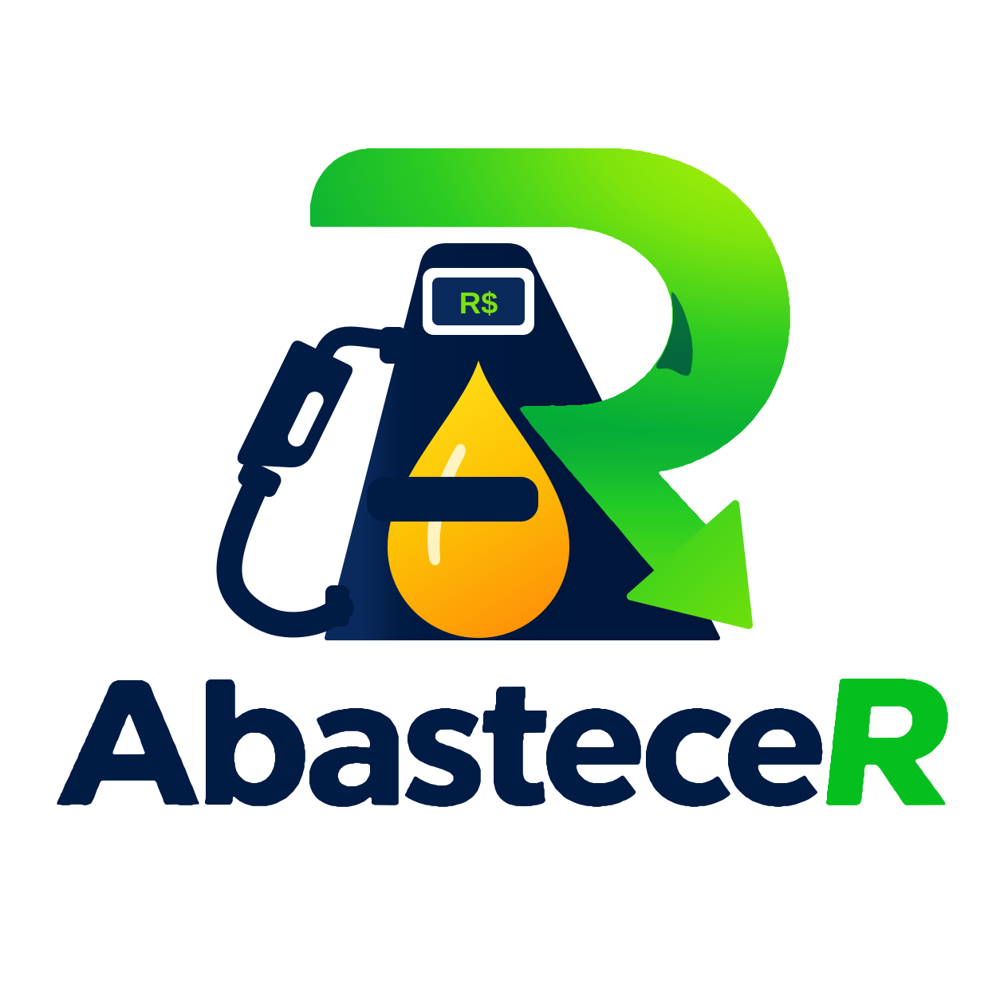

<!doctype html><meta charset="utf-8"><title>AbasteceR · bomba em A</title><style>body{margin:0;padding:20px;background:#eef1f5;font-family:Arial;display:flex;flex-wrap:wrap;gap:20px}section{background:#fff;border-radius:16px;padding:18px;width:620px} h2{margin:0 0 8px;font-size:20px;color:#001B44}.lado{display:flex;gap:14px;align-items:center} img{display:block} .logo{width:380px;height:380px}.ics{display:flex;flex-direction:column;gap:12px;align-items:center}.ic{width:180px;height:180px;border-radius:40px;box-shadow:0 2px 8px rgba(0,0,0,.18)}.ic.p{width:64px;height:64px;border-radius:15px} .ic.pp{width:40px;height:40px;border-radius:10px}</style><section id="a1b"><h2>A1 · barra larga até 2/3 da gota</h2><div class="lado"><div class="ics"></div></div></section><section id="a1c"><h2>A1 · barra mais larga até o meio da gota</h2><div class="lado"><div class="ics"></div></div></section><section id="a1d"><h2>A1 · barra larga até 3/4 da gota</h2><div class="lado"><div class="ics"></div></div></section>